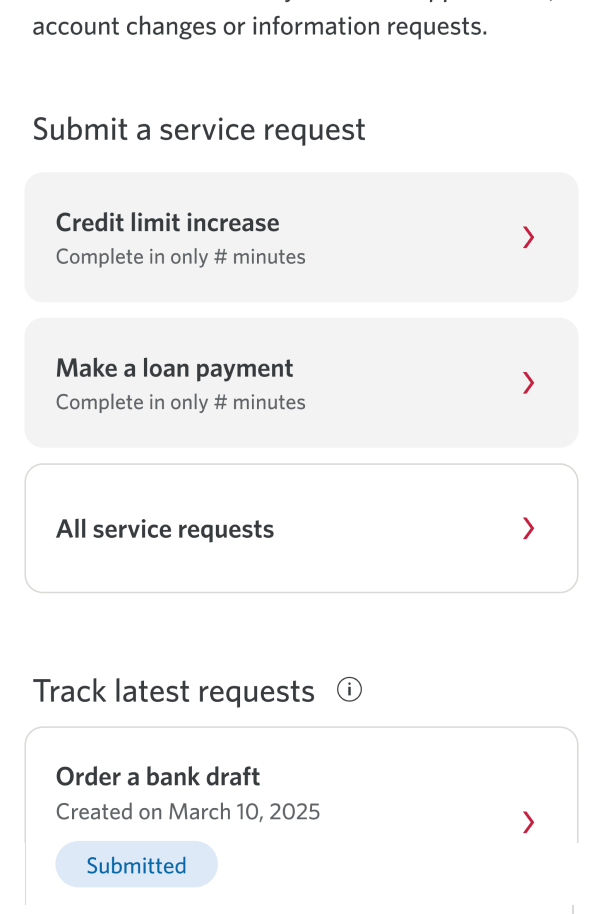
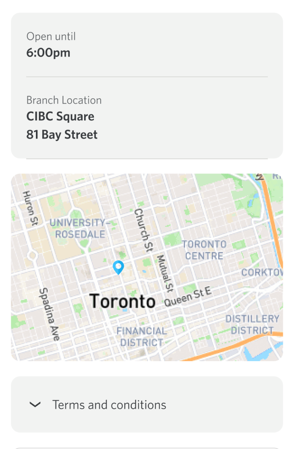
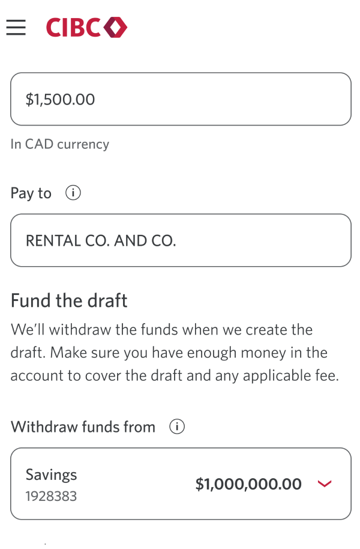
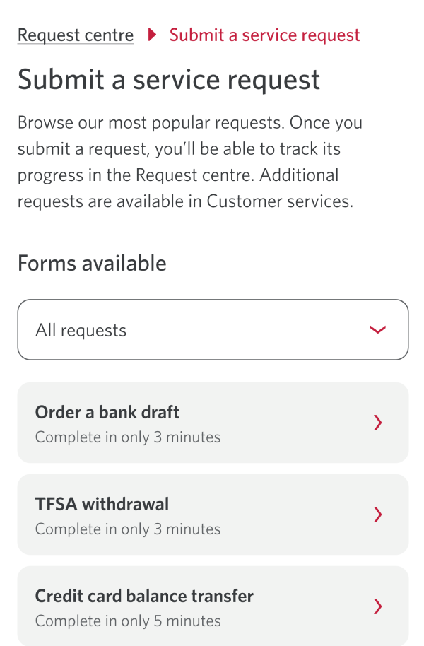
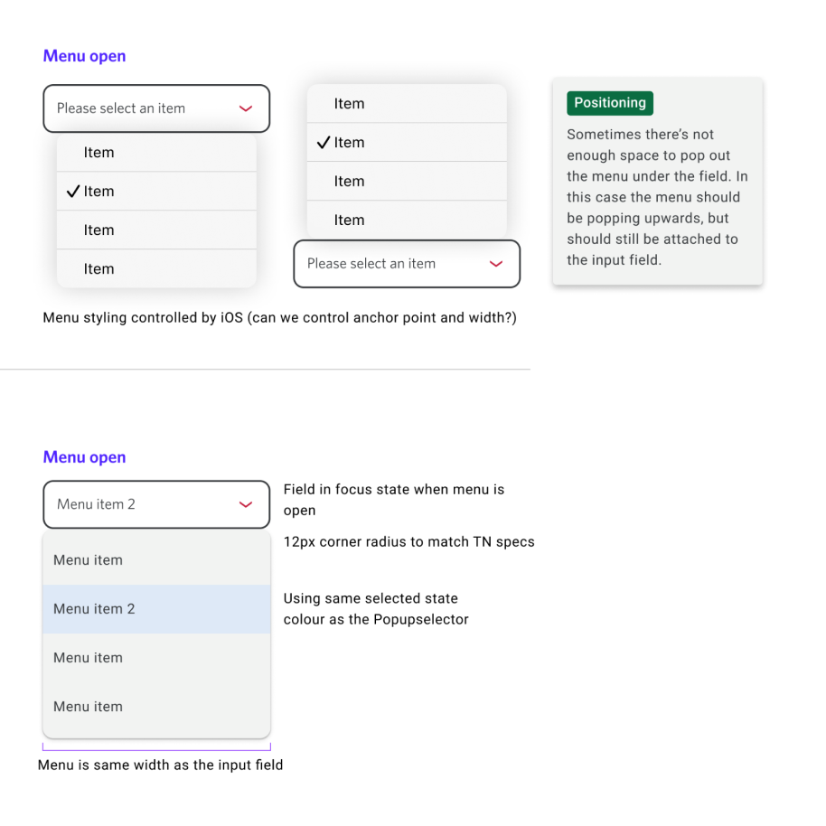

Transforming manual bank draft orders into a digital-first service

Problem
Bank draft requests require in-branch issuance
Customers arrived without context and completed requests within a queue where staff guided verification and issuance.
Research
Friction at initiation
Worked with user research to ground the problem in feedback and support calls, ensuring design direction reflected real in-branch friction.
Long branch wait times
Pressure to rush transactions
Unclear requirements for bank drafts
Solution
Integrated bank draft tracking into existing Status Hub
We extended the existing Status Hub to support bank draft request tracking, enabling users to monitor progress within a familiar system.

Strengthened confidence through visual pickup confirmation
We introduced a map view alongside a list view to help users clearly understand and confirm pickup locations.

Simplified financial decision points within the flow
Critical choices like who the draft is payable to and where funds are withdrawn from were broken into distinct fields to reduce cognitive load and errors.

Integrated with existing data hub across pods
We aligned with adjacent product pods (design, PM, and engineering) to ensure the request flow worked within the existing data hub architecture and design patterns.

Design system contribution and evolution
Contributed to the design system by helping it evolve through new flow requirements, aligning new patterns with existing components and reusing system elements to maintain consistency across the experience.
